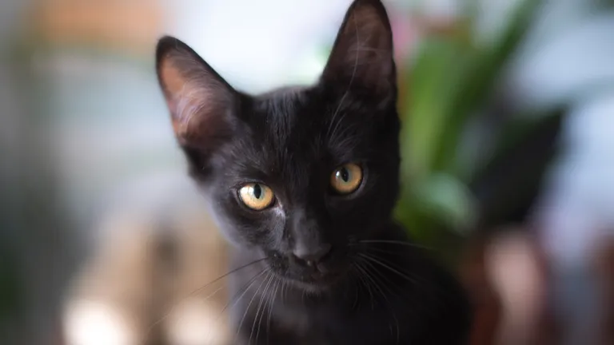
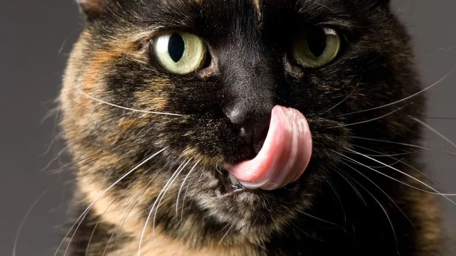

INICIO
Inicio | Lista | Tabla | Formulario
 Aunque al gato se le llamaba myeou en el Alto Egipto, haciendo referencia a la onomatopeya de su maullido, a las hembras las llamaban techau, nombre que se ha encontrado grabado en muchas tumbas de mujeres. De este término deriva el nombre chaus, que ahora denomina a un gato salvaje de Egipto y de Asia, Felis chaus.
National Geographic: Gatos
Después se le atribuye el nombre de qato en siríaco. Parece que ésta sea la verdadera raíz del término italiano gatto. Sin embargo hay otros orígenes posibles, sobre todo el adjetivo latino cautus, que significa astuto o agudo, o también el verbo francés guetter en el sentido de espiar, ya que el gato es un animal activo que tiene la vista y el oído siempre alerta. Algunos etimologistas creen que se tr6ata de una fantasía, ya que el uso de la expresión gato se empieza a usar en Egipto varios siglos antes de la aparición del gato en Atenas, Roma o en la Galia. A pesar de todo no es fácil diferenciar, en los textos antiguos, al gato de otros cazadores de ratas como la marta, la garduña, o la comadreja. Los griegos llamaban a los gatos ailouros, que significa «animal que mueve la cola». De este término procede la palabra para denominar a los amantes de estos animales: los ailurofílicos.
La historia del gato se basa sobre todo en la percepción que el hombre tiene del pequeño felinoA partir de la Edad Media, gatti o cattine fella designaban las pieles de gato, usadas para monederos. En esa época también se usaban otros términos para designar al gato doméstico. Todos empiezan por la palabra latina mus, que significa ratón.
Volver arriba